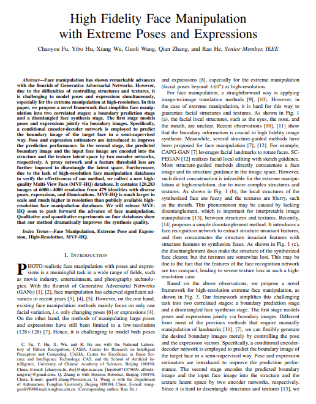

|
|
The MVF-HQ dataset is built by Center for Research on Intelligent Perception and Computing (CRIPAC), National Laboratory of Pattern Recognition (NLPR), Institute of Automation, Chinese Academy of Sciences (CASIA). This dataset contains a total of 120,283 high-resolution (the original resolution is up to 6000x4000) face images from 479 identities with diverse poses, expressions, and illuminations.
All publications using MVF-HQ should cite the paper:
|  | High Fidelity Face Manipulation with Extreme Poses and Expressions Chaoyou Fu, Yibo Hu, Xiang Wu, Guoli Wang, Qian Zhang, Ran He IEEE Transactions on Information Forensics and Security (TIFS), 2020. |
You can download the agreement (pdf) from here. After filling it, please send the electrical version to our Email: mvfhq@cripac.ia.ac.cn (Subject: MVF-HQ_AGREEMENT). After confirming your information, we will send the download link to you via Email. You need to follow the agreement. Please note that we currently only provide the aligned images at 1024x1024 resolution. The images at higher resolution are in preparation.
{kind=link}